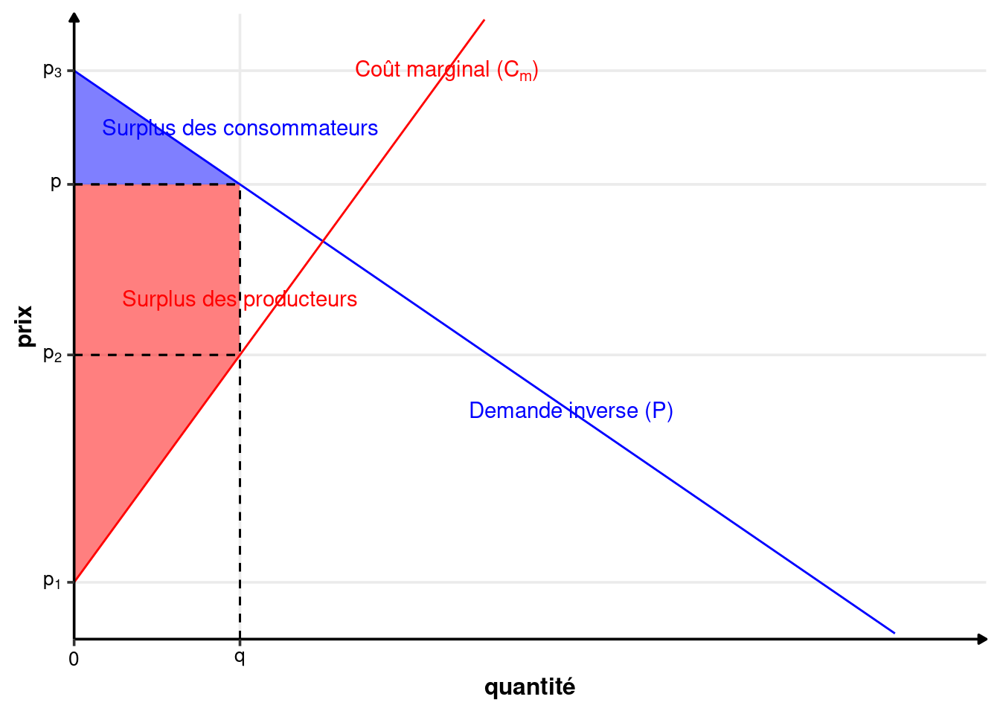
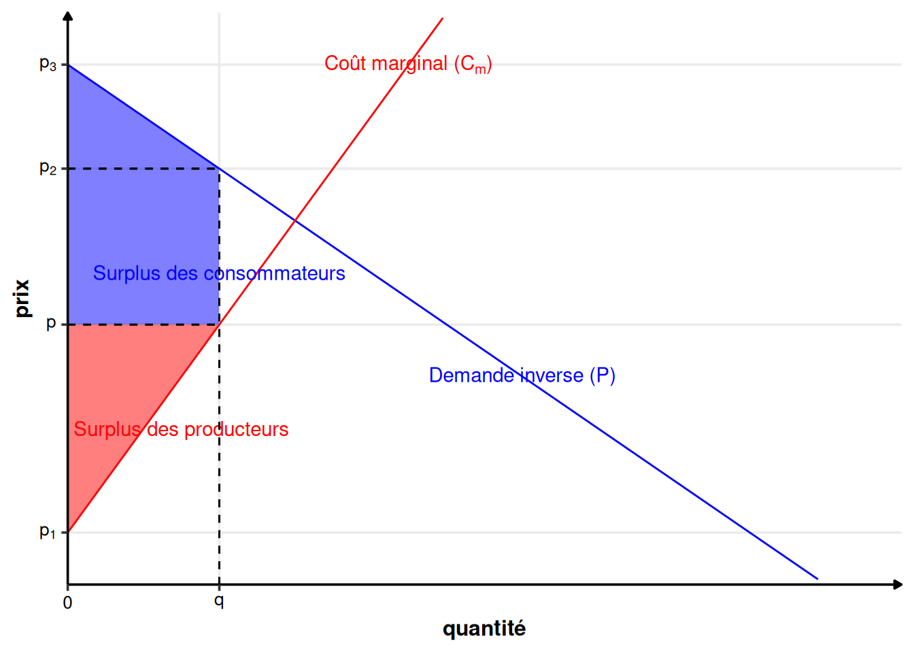

Annexe C — Calcul des surplus
Définition C.1 (Surplus des consommateurs) Le surplus des consommateurs est la somme de la différence entre le prix maximum que les consommateurs étaient prêt à payer et le prix effectivement payé. Mathématiquement, c’est l’intégrale suivante : \[ S_c(q)=\int_0^qP(x)-pdx=\int_0^qP(x)dx-pq \] Où \(p\) est le prix payé, \(q\) la quantité échangée et \(P\) la demande inverse.
L’intégrale signifie que c’est l’aire comprise entre la demande inverse (la fonction \(P\)), le prix payé par les consommateurs (le prix \(p\)), l’axe des ordonnées et la quantité échangée (\(q\)). Dans notre cours, ce sera l’aire d’un triangle ou d’un trapèze.
Définition C.2 (Surplus des producteurs) Le surplus des producteurs est la somme de la différence entre le prix reçu par les producteurs et le coût marginal de production. Mathématiquement, c’est l’intégrale suivante : \[ S_p(q)=\int_0^qp-C_m(x)dx=pq-\int_0^qC_m(x)dx \tag{C.1}\] Où \(p\) est le prix reçu par le producteur, \(q\) la quantité vendue et \(C_m\) la coût marginal.
L’intégrale signifie que c’est l’aire comprise entre le prix reçu par les producteurs (\(p\)), le coût marginal (\(C_m\)), l’axe des ordonnées et la quantité échangée (\(q\)). Dans notre cours, ce sera l’aire d’un triangle ou d’un trapèze.
Remarque (Lien entre surplus et profit). Si on continue l’expression donnée par l’équation C.1, on obtient : \[S_p(q)=pq-\left[C(x)\right]_0^q=pq-C(q)+C(0)=\pi(q)+C(0)\] Cela prouve la relation donnée informellement dans le cours entre surplus et profit. Le surplus est la somme du profit réalisé par les producteurs et des coûts fixes (des coût qui ne dépendent pas de la quantité).
Remarque (Aire d’un triangle). L’aire d’un triangle est donnée par la formule suivante : \[\text{aire triangle}=\frac{1}{2}\times\text{base}\times\text{hauteur}\]
Remarque (Aire d’un trapèze). L’aire d’un trapèze est donnée par la formule suivante : \[\text{aire trapèze}=\frac{1}{2}\times(\text{petite base}+\text{grande base})\times\text{hauteur}\]
On peut illustrer ces formules avec deux cas pratiques (sur la figure C.1 et figure C.2).
Les valeurs sur les graphiques sont obtenues de la manière suivante :
- \(q\) est connu ou \(p\) est connu ;
- Si \(q\) est connu, on obtient \(p\) grâce à la fonction de demande inverse : \(p=P(q)\). Si \(p\) est connu, on obtient \(q\) avec la fonction de demande \(q=Q(p)\) ou en résolvant l’équation \(p=P(q)\).
- \(p_3=P(0)\) ;
- \(p_1=C_m(0)\) ;
- \(p_2\) dépendra du cas.
Le premier cas est illustré sur la figure C.1. Le prix de l’échange \(p\) est tel que le surplus des consommateurs est un triangle, et le surplus des producteurs est un trapèze. Dans ce cas, on obtient \(p_2= C_m(q)\). Le surplus des consommateurs est donné par : \[ S_c=\frac{1}{2}\times(p_3-p)\times q \] Et le surplus des producteurs par : \[ S_p=\frac{1}{2}\times(p-p_2+p-p_1)\times q \]
Le second cas est illustré sur la figure C.2. Le prix de l’échange \(p\) est tel que le surplus des consommateurs est un trapèze, et le surplus des producteurs est un triangle. Dans ce cas, on obtient \(p_2= P(q)\). Le surplus des consommateurs est donné par : \[ S_c=\frac{1}{2}\times(p_3-p+p_2-p)\times q \] Et le surplus des producteurs par : \[ S_p=\frac{1}{2}\times(p-p_1)\times q \]
